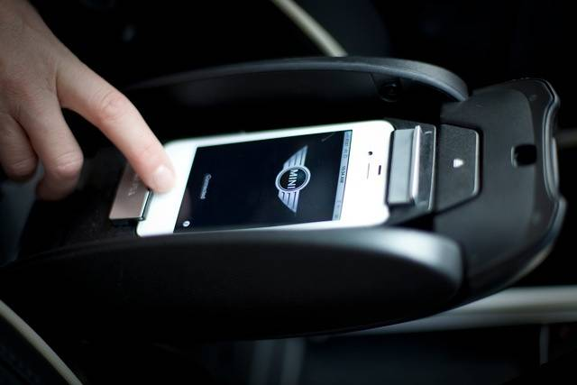
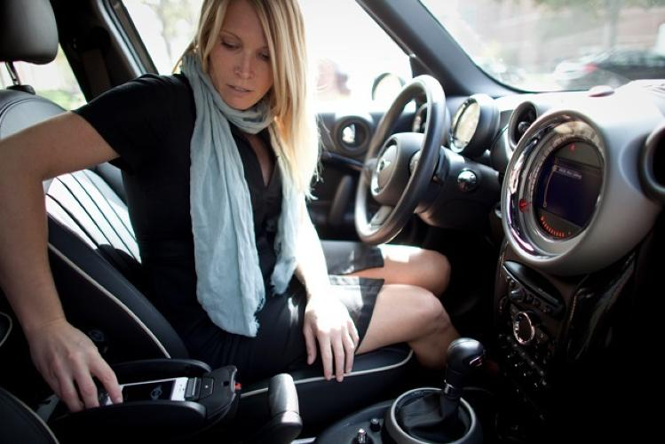
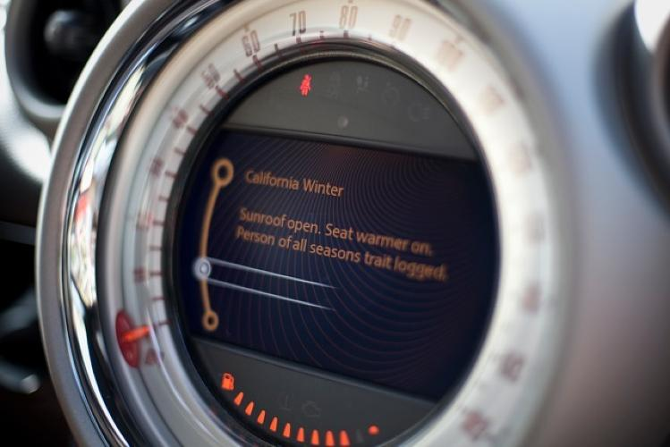
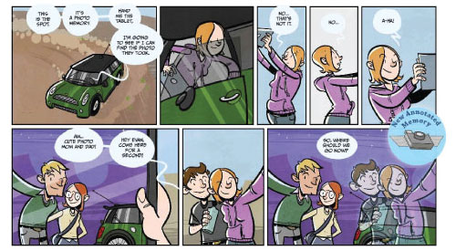
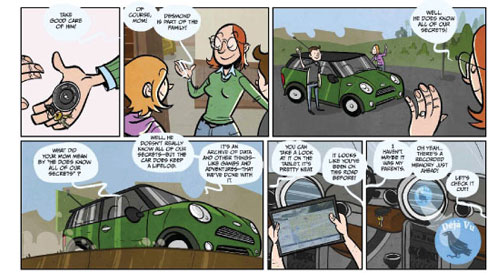

After my first year at USC, I joined the Mobile & Environmental Media Lab (MEML) as an undergraduate research assistant. During this time, the lab was working on an exciting project sponsored by BMW that sought to answer the following questions:
How might we use sensor data from vehicles to augment the relationships drivers have with their cars? And how might we use techniques borrowed from game design to create more enjoyable driving experiences?
It's an exciting time for interaction design in automobiles. All new cars are filled with hundreds of sensors that record everything from tire pressure and brake pad condition to geolocation and the song playing on the radio. Before I joined MEML, the team had developed a system that captured all of these sensor values in the car. The research group was interested in exploring ways to let drivers use this data to build a rich "lifelog" of their personal relationship with their car. The lifelog provides drivers with a rich information collection that can be analyzed for driving behaviors, annotated, and shared with the world.
The Lifelog prototype was developed using the Mini Connected platform. When an iPhone was connected to the vehicle, all sensor values were recorded and stored in a SQL database.
This system let the group author certain behaviors that would give the car a sense of a personality. The lifelog constantly monitored what the car was doing, how many people were in it, and where it was headed to better communicate with the driver through the infotainment system. The car might challenge the driver to do something out of the ordinary, such as drive to the beach or meet up with other MINI Cooper drivers. It could also communicate achievements or milestones. The main goal was to make the vehicle-driver relationship more playful, pervaisve and meaningful.


One of the coolest parts of doing interactive design research in a Cinema School is using storytelling as part of the design process. While the technical prototyping was incredibly important, the group also often worked with storyboard artists to imagine delightful futures for the lifelog. We then prototyped towards that design fiction.


This method of designing and prototyping based on fictional scenarios was a great way to think through the possible uses of each feature and probably saved a lot of development time on ideas that weren't as great as they could have been.
As an undergraduate research assistant, I largely kept notes and helped produce supplemental graphics for research papers. But my biggest contribution was working through a prototype for a tablet application that let drivers explore their lifelog out of the vehicle.
After interviewing MINI stakeholders and drivers, we identified several different types of user archetypes with different needs and values. We designed in-car experiences for most of these archetypes by using the infontainment system as an interface.
However, one group of users had different needs. We refered to this group as "Data Mongers", and they are the type of people who want to know everything there is to know about their relationship with their car, from individual trips to lifelong trends.
The infotainment system was not the right platform to build an experience for these users, because it was so limited by screen space, technical specifications and ergonomics. Additionally, it wasn't safe to allow drivers the ability to access something distracting that required so much focus.
For these drivers, I created a quick prototype of what an iPad dashboard could look like that allowed drivers to examine their personal lifelog data in more detail. This was my first effort in UX/UI design and I learned a lot about the process. It was such a cool project and it made me more interested in interaction design for automobiles.